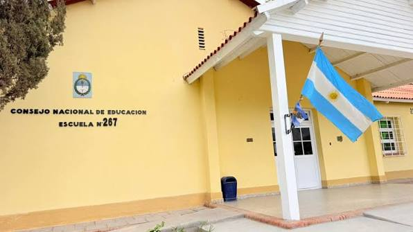
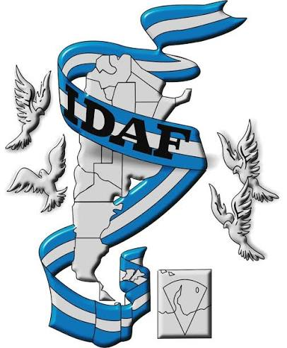
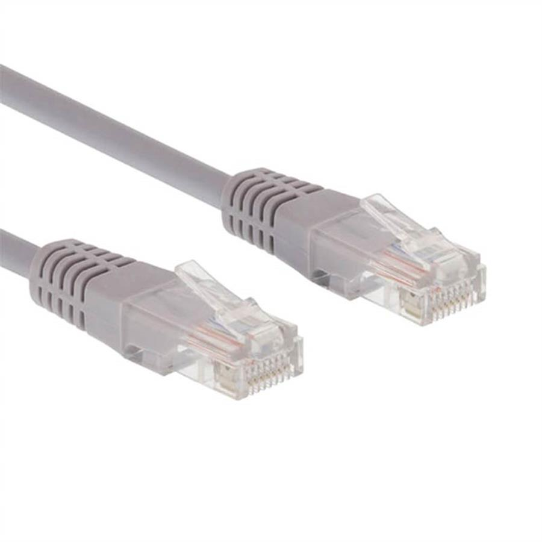
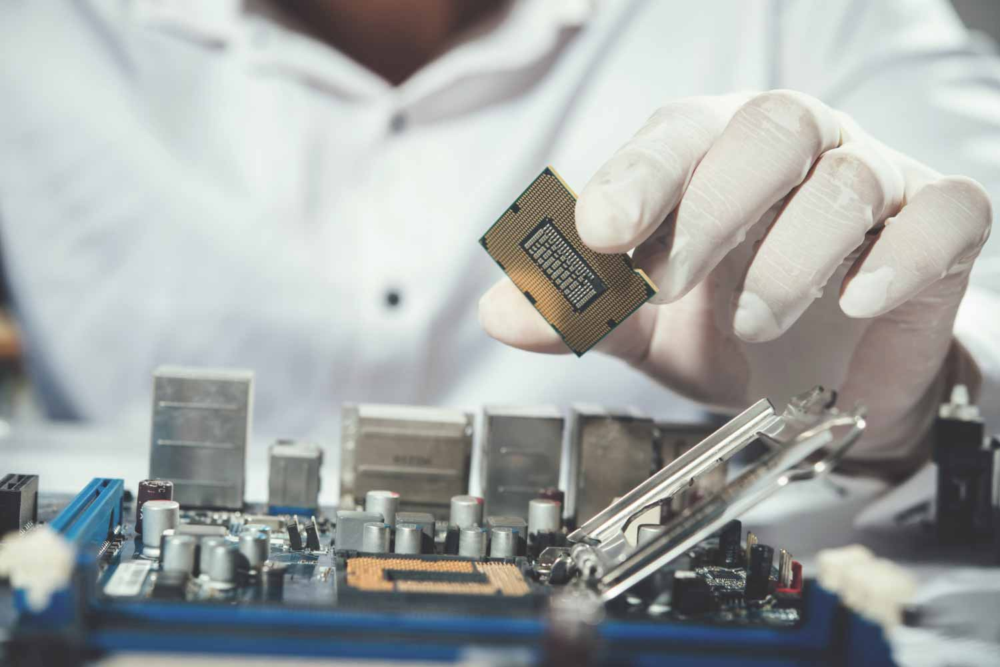
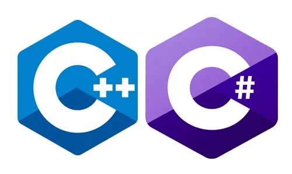
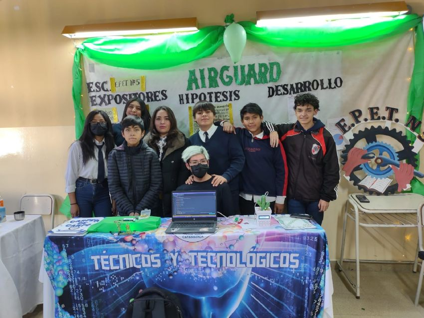

En este espacio presento parte de mi formación, mis habilidades,
los proyectos en los que participé, mis intereses y algunas de
las actividades que forman parte de mi desarrollo personal y académico.
Sobre mí
Samira María José Marcial Castro
Estudiante de Informática y apasionada por la tecnología
Soy estudiante de 7.º año de Técnico en Informática Profesional
y Personal, con interés en la tecnología, el desarrollo web,
las redes y los proyectos informáticos.
Me considero una persona responsable, organizada y comprometida con las
actividades que realizo. Me gusta aprender cosas nuevas, buscar soluciones
a los problemas y trabajar junto a otras personas para alcanzar un objetivo.
Además de mi formación en informática, también estudio Profesorado de Danza
Folclórica. La danza ocupa un lugar importante en mi vida y me permite
desarrollar otras habilidades, como la comunicación, la expresión,
la responsabilidad y el trabajo en grupo.
Mi objetivo es continuar desarrollando mis conocimientos, adquirir nuevas
experiencias y seguir preparándome para mi futuro académico y laboral.
Habilidades personales
Considero que mis habilidades personales son una parte importante de mi
formación, ya que me ayudan tanto en el ámbito educativo como al trabajar
con otras personas.
🤝 Responsabilidad y compromiso
Cumplo con las tareas y actividades que realizo, tratando de mantener
siempre un buen compromiso.
👥 Trabajo en equipo
Me gusta trabajar junto a otras personas y colaborar para alcanzar un objetivo.
📋 Organización
Intento organizar mis tareas y administrar bien mi tiempo.
💬 Comunicación
Me esfuerzo por expresar mis ideas de manera clara y escuchar a los demás.
🔄 Adaptabilidad
Me adapto a diferentes situaciones y estoy dispuesta a aprender cosas nuevas.
🧩 Resolución de problemas
Busco soluciones cuando aparecen dificultades durante una actividad o proyecto.
📚 Predisposición para aprender
Tengo interés en adquirir nuevos conocimientos y seguir mejorando.
💙 Respeto y compañerismo
Valoro el respeto, la colaboración y el buen trato con las demás personas.
Habilidades técnicas
A lo largo de mi formación en Informática fui adquiriendo conocimientos
en diferentes áreas relacionadas con la tecnología.
💻 Programación
Conocimientos básicos de programación utilizando C# y C++.
🌐 Desarrollo web
Desarrollo básico de páginas web utilizando HTML y CSS.
🔌 Redes informáticas
Conocimientos sobre cableado estructurado, conectores RJ45 y componentes de redes.
🖥️ Hardware
Instalación, armado y mantenimiento básico de computadoras.
⚙️ Sistemas operativos
Instalación y configuración básica de sistemas operativos.
📊 Herramientas informáticas
Manejo de Microsoft Word, Excel, PowerPoint, Visual Studio Code y Visual Studio.
Formación
Escuela Provincial de Educación Técnica (E.P.E.T. N.º 5)
EPET N°5: Tecnico en Informatica Personal y Profesional
Modalidad Informática. Actualmente curso 7.º año.
Durante mi formación adquirí conocimientos relacionados con
programación, desarrollo web, redes, hardware, sistemas operativos
y herramientas informáticas.
Educación Primaria

Escuela N°267 El Recreo
Formación primaria completa, que fue la base para continuar
desarrollando mis conocimientos y continuar con mi formación.
Profesorado de Danza Folclórica

IDAF: Instituto de Arte Folklorico Argentino
Actualmente también estudio Profesorado de Danza Folclórica,
una formación que forma parte importante de mi desarrollo personal.
Proyectos y experiencias
Durante mi formación, participé en diferentes proyectos y experiencias
relacionados con la informática y la tecnología.
Desarrollo de páginas web
Desarrollo básico de páginas web utilizando HTML y CSS.
Proyecto de Gestion
Hospitalaria
Proyecto de una página web para mejorar la gestión de servicios
y turnos de un hospital.
Prácticas de redes

Prácticas de cableado estructurado, conectores RJ45 y componentes
de redes.
Hardware y mantenimiento

Armado, mantenimiento y reconocimiento de componentes de computadoras.
Programación

Desarrollo de programas básicos utilizando C# y C++.
Actividades
Además de las actividades relacionadas con la informática, participo en
diferentes propuestas que me permiten seguir aprendiendo y desarrollando
nuevas habilidades.
Actividades de Danza Folclórica
Participo en actividades relacionadas con la Danza Folclórica
y actualmente también doy clases de danza a un grupo de niños.
Esta actividad me permite desarrollar la comunicación, la responsabilidad,
la expresión y el trabajo en equipo.
Actividades escolares
Participo en proyectos, exposiciones y actividades prácticas realizadas
durante mi formación técnica.

Actividad realizada durante mi formación escolar.
Mis pasatiempos
En mi tiempo libre disfruto realizar actividades que me permiten
distraerme, compartir con otras personas y seguir desarrollando
diferentes habilidades.
Danza Folclórica
La danza folclórica es uno de mis principales intereses.
Me gusta aprender diferentes danzas, practicar y compartir lo aprendido
con otras personas.
Vóley
Otro de mis pasatiempos es jugar al vóley. Es una actividad
que disfruto porque permite compartir con otras personas y trabajar en equipo.
Hockey
También disfruto practicar hockey. Es una actividad
que me permite compartir con otras personas, mantenerme activa y
seguir desarrollando el trabajo en equipo.
Información adicional
Me interesa continuar aprendiendo y ampliar mis conocimientos,
especialmente en el área de informática, tecnología y redes.
También considero importante seguir desarrollando mis habilidades
personales a través de actividades como la danza y el trabajo en equipo.
Idiomas
Español: Nativo.
Inglés: Básico.
Intereses
Informática y tecnología.
Desarrollo web.
Redes informáticas.
Programación.
Danza Folclórica.
Aprender nuevos conocimientos.
Contacto
Si querés realizar una consulta relacionada con mis conocimientos,
proyectos o actividades, podés comunicarte conmigo mediante el
siguiente formulario.
Samira María José Marcial Castro
Estudiante de Técnico en Informática Profesional y Personal.